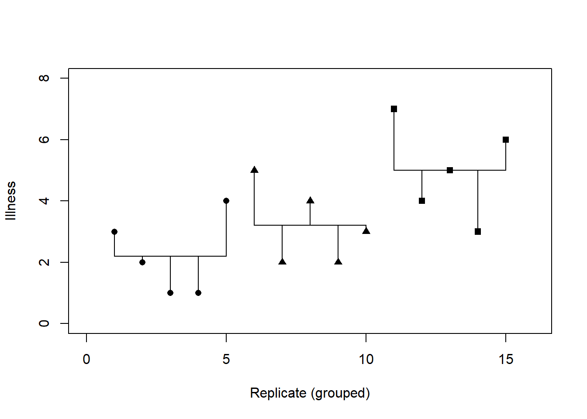
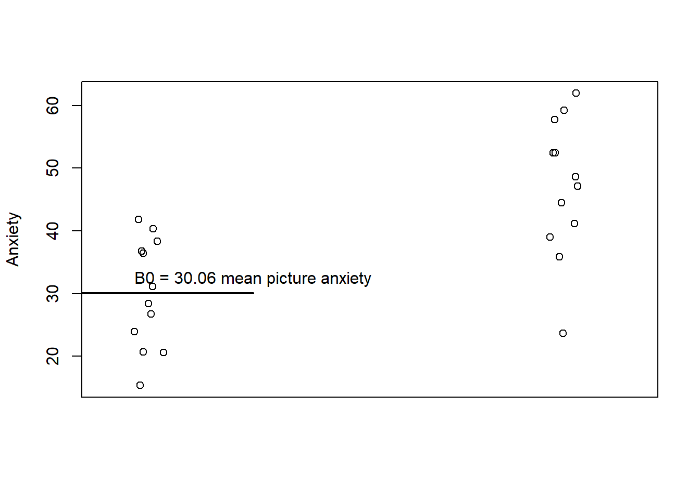
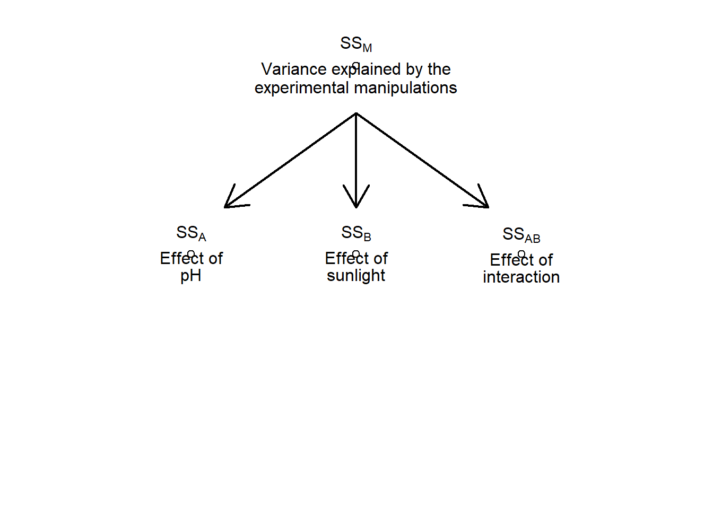

19 Comparing Two Means using t-tests
A common situation is the comparison of the means of two populations.
An example of a t-test is to evaluate the mean blood clotting times between populations that were given two drugs.
- \(H_0: \mu_B = \mu_G\), where \(\mu\) is the mean blood clotting time (in minutes)
If the samples came from two normally distributed populations and the variances of the populations are equal ,we can use a two sample t-test. These conform to the assumptions of parametric statistics.
Two samples of data are collected and the sample means calculated.
The calculated means might differ by either a little or a lot.
19.1 Small differences in mean samples values
We expect their means to be equal or very close. In this case, it is possible (even likely) for the population means to differ by chance alone (due to sampling error). We wwould expect that large differences in the mean values would occur very infrequently.
\(H_0: \mu_B = \mu_G\)
Alternatively, we can pose this as the difference in the mean:
\(H_0: \mu_B - \mu_G = 0\).
We are interested in understanding the magnitude of difference between the sample means.
We use the standard error as a gauge of the variability between sample means.
19.2 Large differences in mean samples values
If the difference between the samples we have collected is large, then we can infer one of two things:
1.) There is no effect of the two blood clotting medicine and by chance we calculated two sample means that are atypical of the population from which they came.
2.) The two samples come from different populations (populations with different mean values). In this scenario, the difference between samples represents a genuine difference between the samples (and we falsify the null hypothesis).
So, this is the null model we are testing; did the samples come from the same population or did the samples come from the different populations?
If the observed difference between the sample means is large: The more confident we become that the second explanation is correct (i.e. that the null hypothesis should be rejected).
19.3 Example
Is arachnophobia (fear of spiders) specific to real spiders or is a picture enough?
24 arachnophobic individuals
Experimental Manipulation:
n = 12 randomly chosen participants were exposed to a real spider.
n = 12 randomly chosen participants were exposed to a picture of the same spider.
We monitor the anxiety produced.
19.4 We will evaluate these data using a linear model
Consider an experiment where ‘Groups’ were exposed to a “Picture of a Spider” and an “Actual Spider”
The response variable is the level of Anxiety (A)
\(\hat{A_i}=b_0+b_1G_i\)
The independent variable G has only two values “Group 1” and “Group 2” ie. The “real” and “picture” groups.
## Group Anxiety G
## 1 Picture 20.67124 0
## 2 Picture 36.79956 0
## 3 Picture 38.36280 0
## 4 Picture 26.76544 0
## 5 Picture 36.46704 0
## 6 Picture 15.36294 0
## 7 Picture 20.63903 0
## 8 Picture 23.93972 0
## 9 Picture 40.35177 0
## 10 Picture 41.79260 0
## 11 Picture 31.16043 0
## 12 Picture 28.42174 0
## 13 Real Spider 23.68506 1
## 14 Real Spider 59.23398 1
## 15 Real Spider 35.84786 1
## 16 Real Spider 47.14871 1
## 17 Real Spider 44.51467 1
## 18 Real Spider 52.42887 1
## 19 Real Spider 61.94535 1
## 20 Real Spider 52.43209 1
## 21 Real Spider 39.05075 1
## 22 Real Spider 57.72527 1
## 23 Real Spider 48.60876 1
## 24 Real Spider 41.13388 1
19.5 Picture Group
We can code the variable, G, as a ‘dummy’ variable. It will take on the values one or zero. We can assign one group to have a value of zero, and one group to have a value of one. In the case of the ‘picture’ group, we will assign a value of G to be zero.
\(G_{picture}=0\)
\(\hat{A_i}=b_0+b_1G_i\)
The expected anxiety of group “picture” is the mean of anxiety of group “picture”.
\(\bar{A}_{Picture}=b_0+b_1G_{picture}\)
\(\bar{A}_{Picture}=b_0+b_1\times0\)
\(\bar{A}_{Picture}=b_0\)

19.6 Real Spider Group
Again, we can code the variable, G, as a ‘dummy’ variable. It can take on the values one or zero.
We have assigned a value of G to be zero for the “picture” group. So, for the “real” group, we will assign the dummy variable G to equal one.
\(G_{real}=1\)
\(\hat{A_{G=1}}=b_0+b_1G_i\)
\(\hat{A_i}=30.06+b_1\times1\)
\(\hat{A_i}=30.06+b_1\)
\(b_1 = \hat{A_i}-30.06\)
\(b_1\) = Difference between means
\(b_1=\bar{A}_{Real}-\bar{A}_{Picture}\)
Our task is to understand if this \(\beta_1\) value is significantly different from zero.

19.7 Output from a Regression
Let’s see how this is analyzed in the linear regression approach using R:
##
## Call:
## lm(formula = df.$Anxiety ~ df.$Group)
##
## Residuals:
## Min 1Q Median 3Q Max
## -23.2945 -6.5733 0.6342 7.1292 14.9657
##
## Coefficients:
## Estimate Std. Error t value Pr(>|t|)
## (Intercept) 30.061 2.864 10.496 4.97e-10 ***
## df.$GroupReal Spider 16.918 4.050 4.177 0.000392 ***
## ---
## Signif. codes: 0 '***' 0.001 '**' 0.01 '*' 0.05 '.' 0.1 ' ' 1
##
## Residual standard error: 9.921 on 22 degrees of freedom
## Multiple R-squared: 0.4423, Adjusted R-squared: 0.4169
## F-statistic: 17.45 on 1 and 22 DF, p-value: 0.0003915## Analysis of Variance Table
##
## Response: df.$Anxiety
## Df Sum Sq Mean Sq F value Pr(>F)
## df.$Group 1 1717.4 1717.40 17.448 0.0003915 ***
## Residuals 22 2165.5 98.43
## ---
## Signif. codes: 0 '***' 0.001 '**' 0.01 '*' 0.05 '.' 0.1 ' ' 119.8 The Independent t-test
I am using the variable Y for the observations - this is a departure from Zar’s presentation but the mechanics are identical.
\(t=\frac{\bar{Y}_1-\bar{Y}_2}{\sqrt{\frac{S^2_p}{n_1}+\frac{S^2_p}{n_2}}}\)
The numerator is the difference between sample means.
The denominator is the standard error of the difference between the sample means. This quantity is a measure of the variability of the data within the two samples.
\(S^2_p=\frac{(n_1-1)S^2_1+(n_2-1)S^2_2}{n_1+n_2-2}\)
\(S^2_p=\frac{SS_1+SS_2}{v_1+v_2}\)
Here v1 and v2 are the degrees of freedom, v1 = n1 - 1 and v2 = n2 -1
The test value is compared to the critical value at a given \(\alpha\)
\(t_{\alpha,2,df}\)
- Need to set \(\alpha\) value.
- One or two-tailed test?
- v1 = n1 - 1 and v2 = n2 - 1
19.9 Lets use the data from Zar as a worked example.
\(H_0: \mu_1 = \mu_2\) \(H_A: \mu_1\ne\mu_2\)
\(H_0: \mu_1 - \mu_2 = 0\) \(H_A: \mu_1-\mu_2\ne0\)
| Given drug B | Given drug G |
|---|---|
| 8.8 | 9.9 |
| 8.4 | 9.0 |
| 7.9 | 11.1 |
| 8.7 | 9.6 |
| 9.1 | 8.7 |
| 9.6 | 10.4 |
| 9.5 | |
| —— | |
| \(n_1=6\) | \(n_2=7\) |
| \(\nu_1=5\) | \(\nu_2=6\) |
| \(\bar{Y}_1=\) 8.75 min | \(\bar{Y}_2=\) 9.74 min |
| SS1 = 1.6950 min2 | SS2 = 4.0171 min2 |
\(S^2_p=\frac{SS_1+SS_2}{v_1+v_2}=\frac{1.6950+4.0171}{5+6}=\frac{5.7121}{11}=0.5193 \: \mbox{min}^2\)
\(s_{\bar{Y_1}-\bar{Y}_2}=\sqrt{\frac{S^2_p}{n_1}+\frac{S^2_p}{n_2}}=\sqrt{\frac{0.5193}{6}+\frac{0.5193}{7}}=\sqrt{0.0866+0.0742}\)
\(=\sqrt{0.1608}=0.40\mbox{min}\)
\(t=\frac{\bar{Y}_1-\bar{Y}_2}{s_{\bar{Y}_1-\bar{Y}_2}}\)
19.10 Determine test value
\(t=\frac{\bar{Y}_1-\bar{Y}_2}{s_{\bar{Y}_1-\bar{Y}_2}}=\frac{8.75-9.74}{0.40}=\frac{-0.99}{0.40}=-2.475\)
\(|t|=|\frac{\bar{Y}_1-\bar{Y}_2}{s_{\bar{Y}_1-\bar{Y}_2}}|=2.475\)
19.11 Determine critical value
\(t_{0.05(2),v}=t_{0.05(2),11}=2.201\)
Therefore, reject H0
\(P(|t|\ge2.475)<0.05\) \(\: \:\) \(P=0.031\)
19.12 When Assumptions are Broken
- Non-parameteric t-test Mann-Whitney “U” Test
+Do not require estimation of \(\mu\) and \(\sigma\).
+No assumptions about distributions.
Convert data to RANKS of data.
Two sample rank test
Rank from highest to lowest, the greatest value in either group is given a one, second given a two..
\(U=n_1n_2+\frac{n_1(n_1+1)}{2}-R_1\)
- n1 and n2 are the number of observation sin samples 1 and 2.
- R1 is the sum of the ranks in sample 1
H0: Male and female students are the same height. HA: Male and female students are not the same height.
\(\alpha=0.05\)
| Height of males | Height of females | Ranks of male heights | Ranks of female heights |
|---|---|---|---|
| 193 cm | 178 cm | 1 | 6 |
| 188 | 173 | 2 | 8 |
| 185 | 168 | 3 | 10 |
| 183 | 165 | 4 | 11 |
| 180 | 163 | 5 | 12 |
| 175 | 7 | ||
| 170 | 9 | ||
| — | |||
| \(n_1=7\) | \(n_2=5\) | \(R_1=31\) | \(R_2=47\) |
\(U=n_1n_2+\frac{n_1(n_1+1)}{2}-R_1\)
\((7)(5)+\frac{(7)(8)}{2}-31\)
\(35+28-31\)
\(32\)
\(U^1=n_1n_2-U\)
\((7)(5)-32\)
\(U_{0.05(2),5,7}=30\)
Because 32>30, H0 is rejected.
Therefore, we conclude that height is different for male and female students.